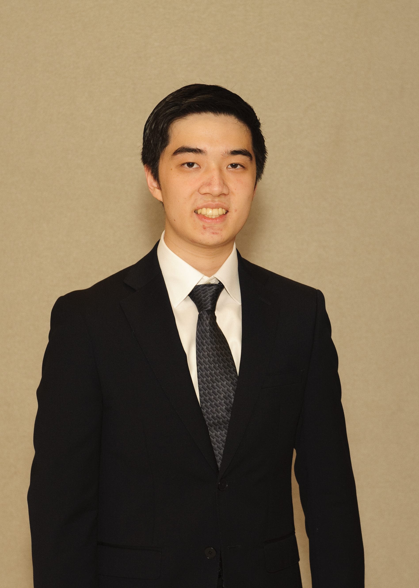

Howdy! I'm Bryan Yan, a master's student at Texas A&M studying computer science. Previously, I completed my bachelor's degree in computer science at Texas A&M, graduating in May 2024.
I have a strong interest in accessibility, especially in the following areas: